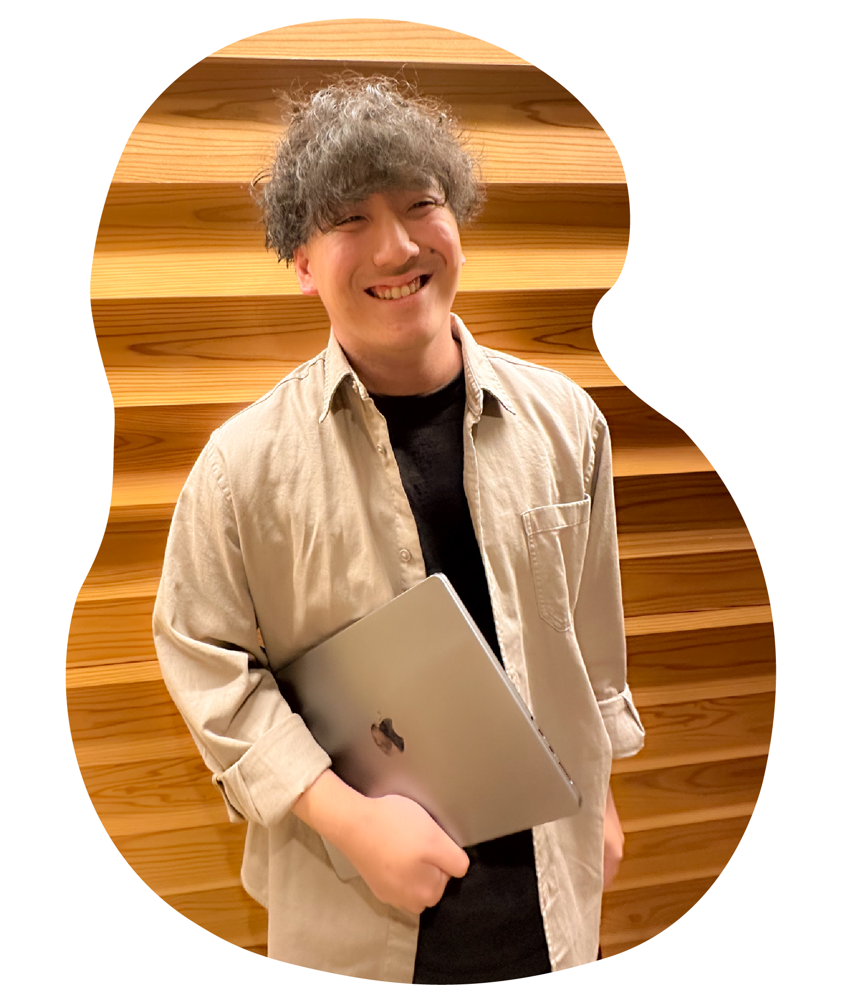

わたしのこと

Designer
糸谷 龍之介(イトタニ リュウノスケ)
1999年、香川県高松市生まれ。
高校在学中にインテリアデザインと木材加工について学ぶ。
また、在学中放課後に興味のあった楽器の制作に独学で取り組み、
完成した楽器の投稿が当時SNSで一万人以上に拡散される。
卒業後は飲食店やイベント会社で販売・営業・ディレクション業務などを担当。
人が感動するものを生み出し、問題を解決する喜びを感じたいと思い
「売る側」から「作る側」の世界へ。